Kubo.
All authentic Filipino food.
Dine in, take out, or we deliver across Ajman. Find us in Al Jurf 2, near Al Aqsa Private School. The kitchen is open every day from 10 in the morning until midnight.
Also on Talabat Noon Food Keeta
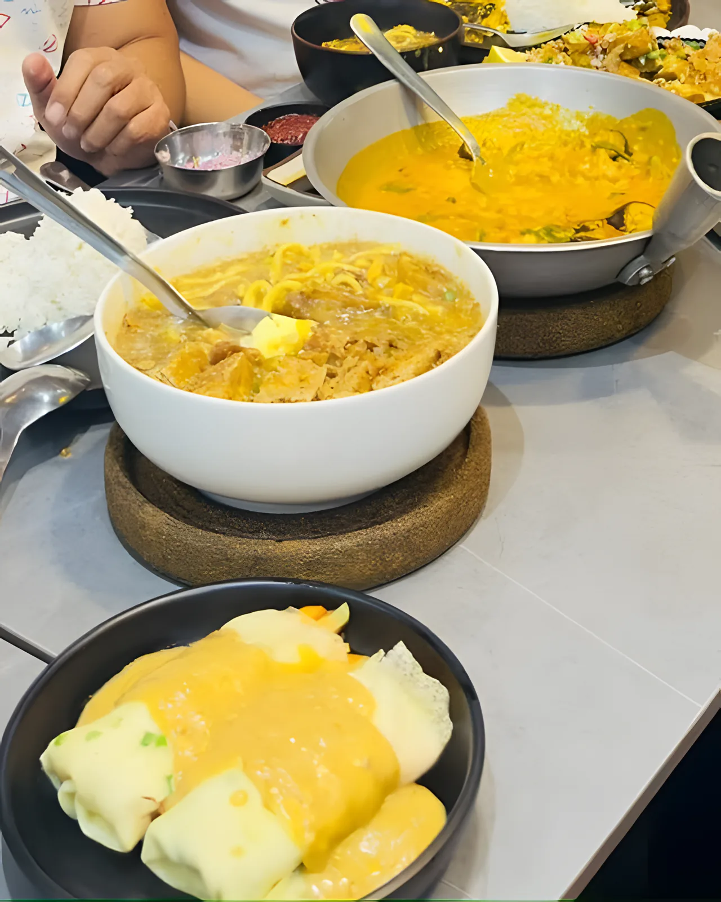
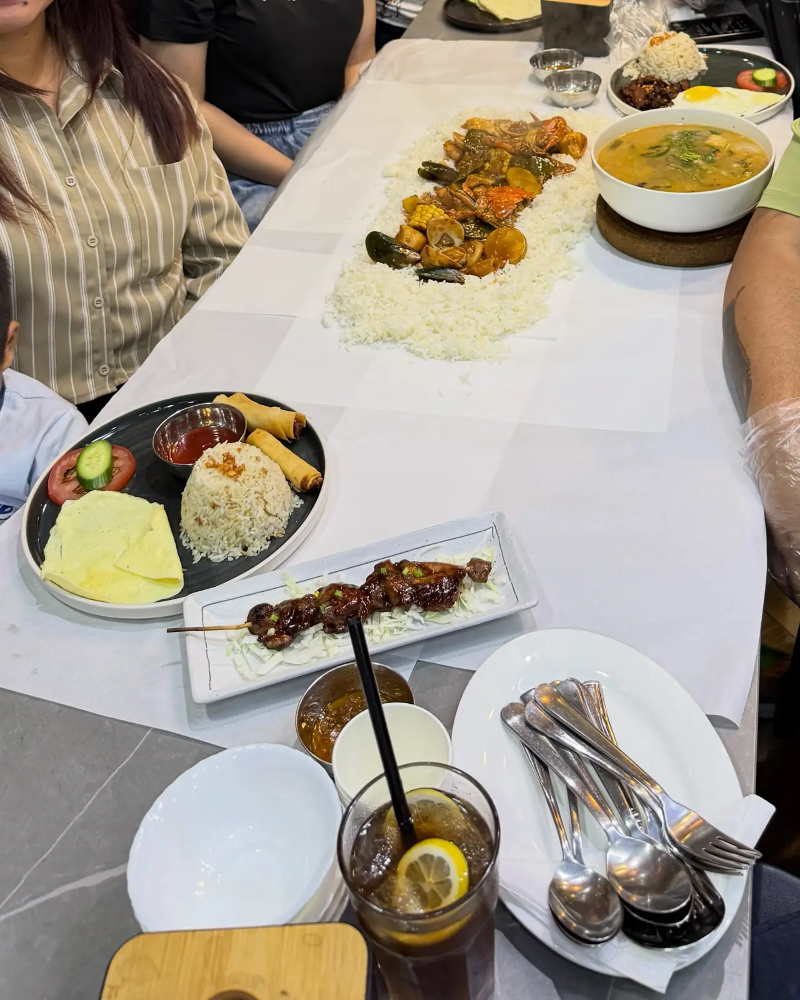
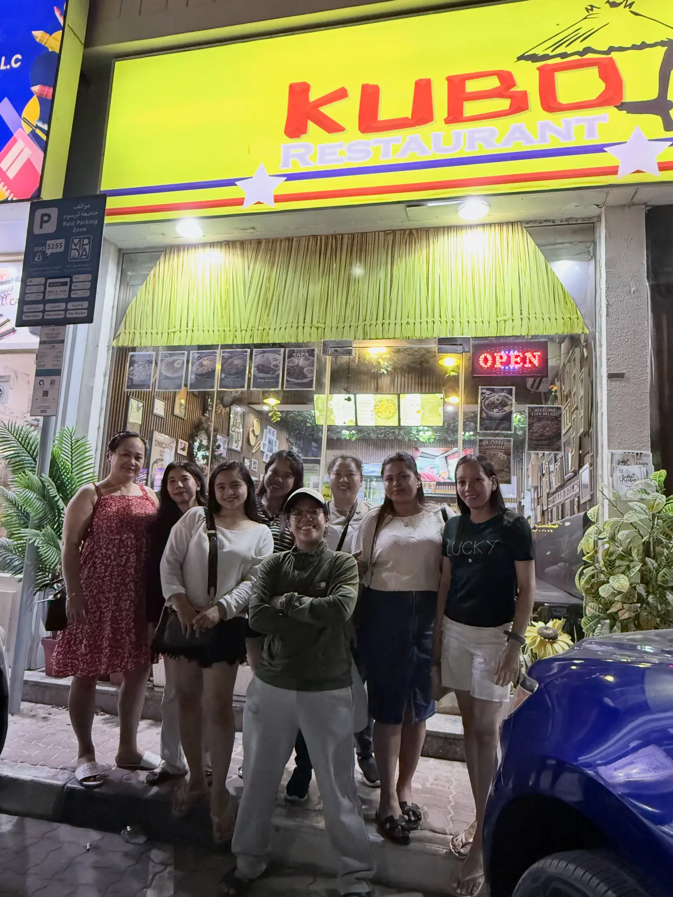
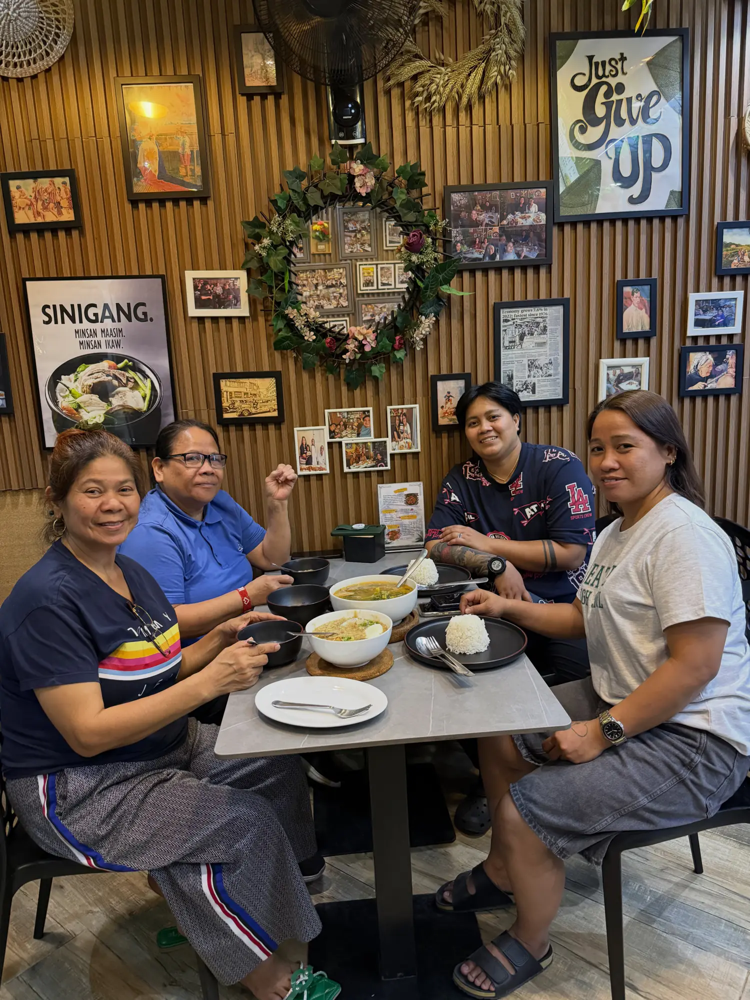
Cozy corners. Comfort food cravings.
Wood-slat walls, plants at the door and a wall full of framed photos. Long tables for the family and the barkada, small ones for two.
“Your support keeps our tables full and our hearts happy.”
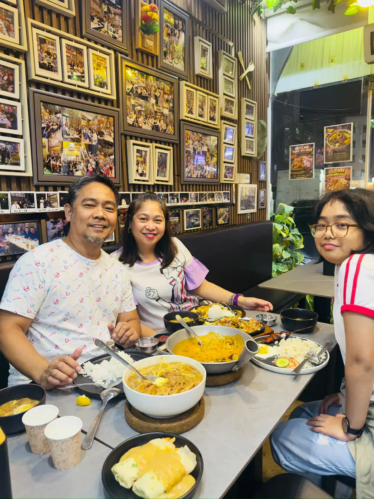
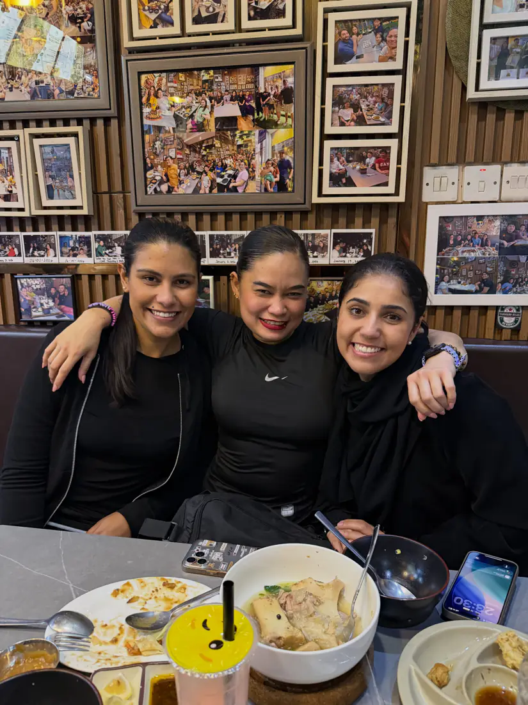
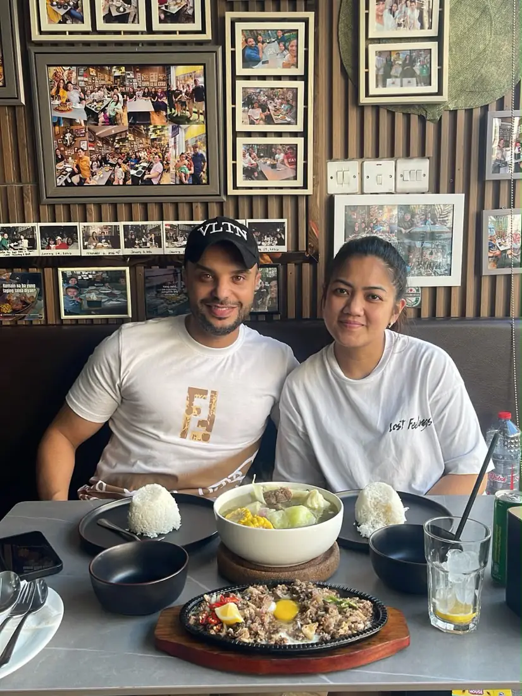
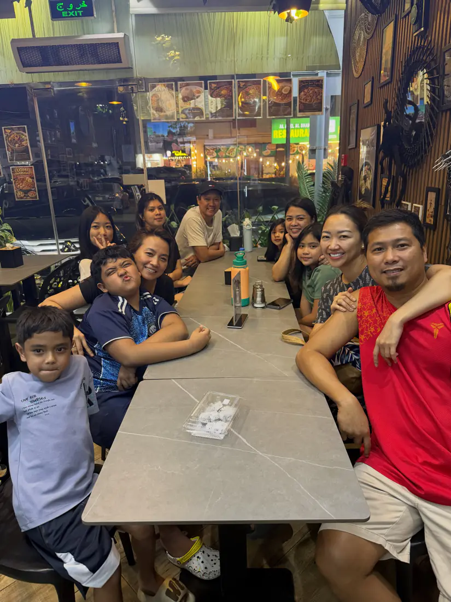
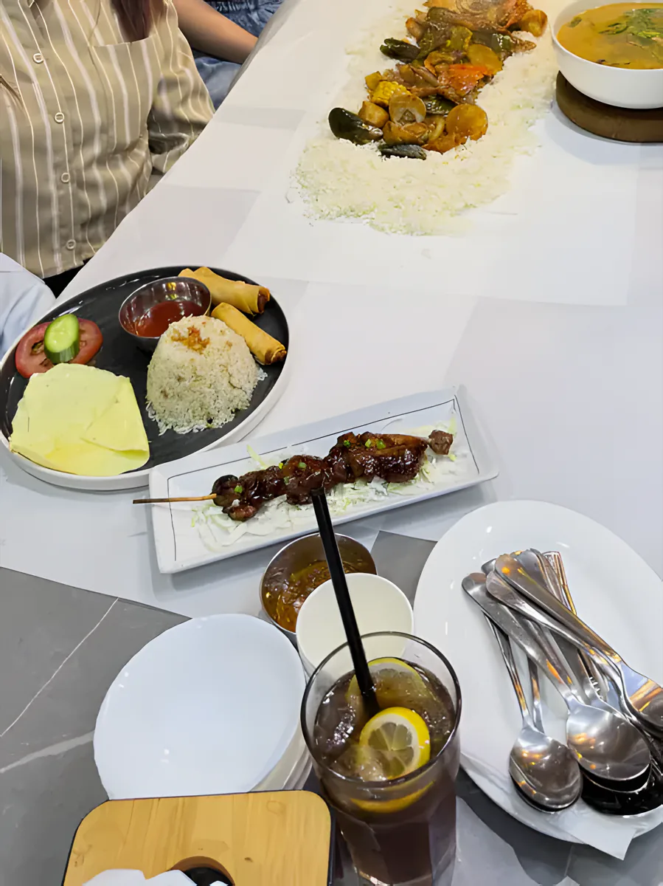
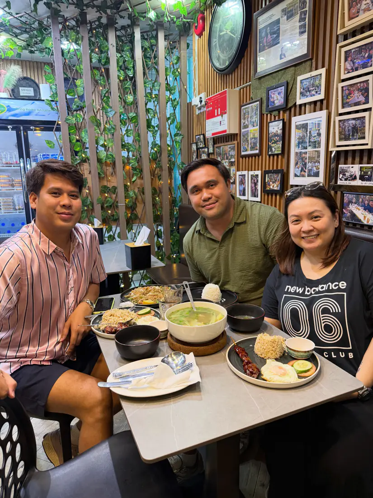
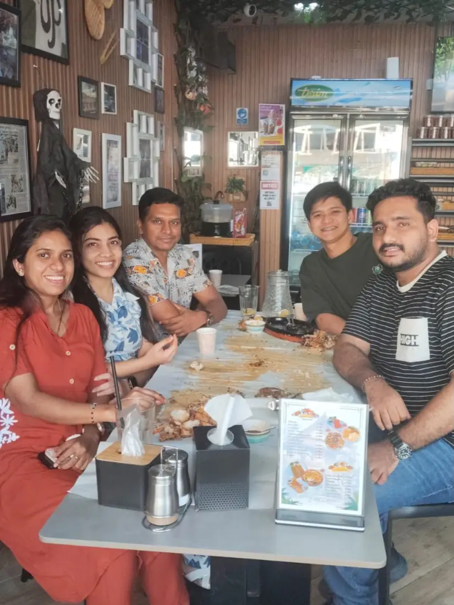
Team Kubo
We play in the Ajman Filipino Expats Paliga ng Liga, and we're proud to fuel the team and the community every step of the way.
Off the court, you'll find us at community events with friends like Sneakers Ajman.
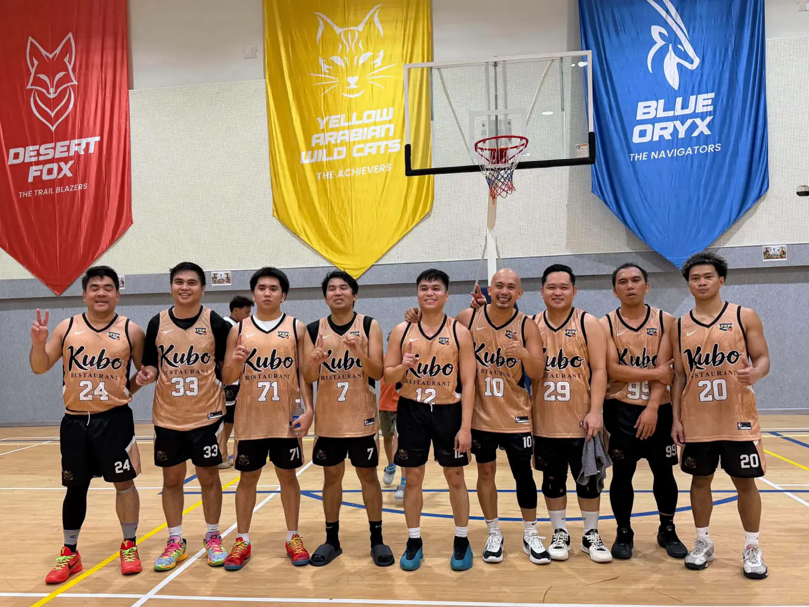
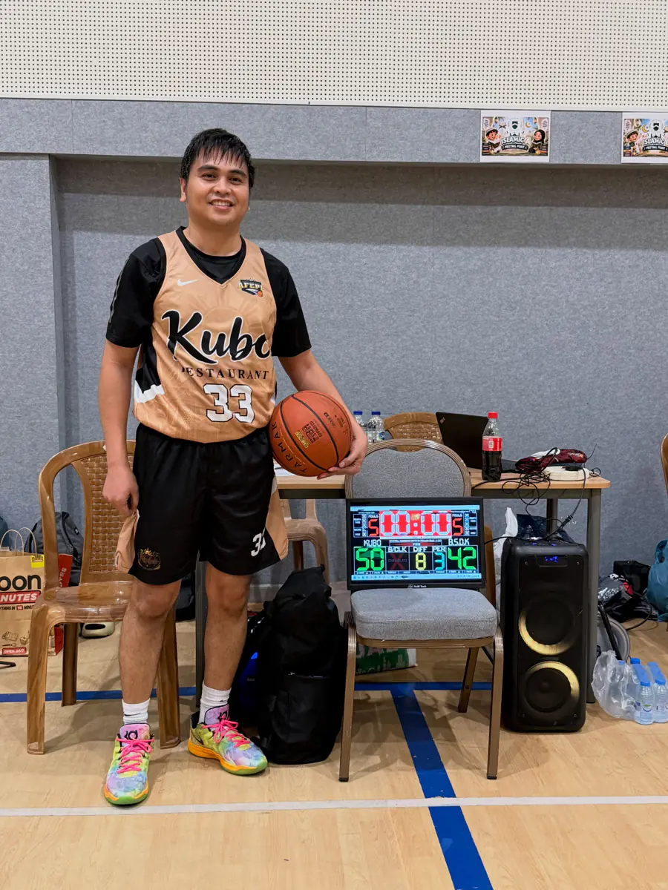
Find us
Open nowAl Jurf 2, Ajman
Near Al Aqsa Private School, Shaikh Rashid Bin Abdul Aziz Street (Askan Holding).
- Every day
- 10am – 12 midnight
- Delivery
- Across Ajman, on WhatsApp or the apps